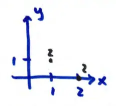
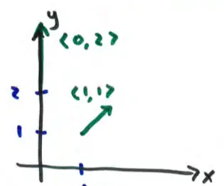

17.1 Vector Fields
(NOT on exam 2)
\( f(x, y) = x + y \) this is also called a scalar field because it assigns a scalar to each point \( (x, y) \).
at \( (1, 1) \) \( f(1, 1) = 2 \)
\( (2, 0) \) \( f(2, 0) = 2 \)

an example: temperature distribution in this room
Vector Fields
A vector field is a function that assigns a vector to a point \( (x, y) \).
for example, \( \vec{F}(x, y) = \langle x, y \rangle = x\vec{i} + y\vec{j} \)
at \( (1, 1) \), \( \vec{F}(1, 1) = \langle 1, 1 \rangle = \vec{i} + \vec{j} \)
\( (0, 2) \), \( \vec{F}(0, 2) = \langle 0, 2 \rangle \)
